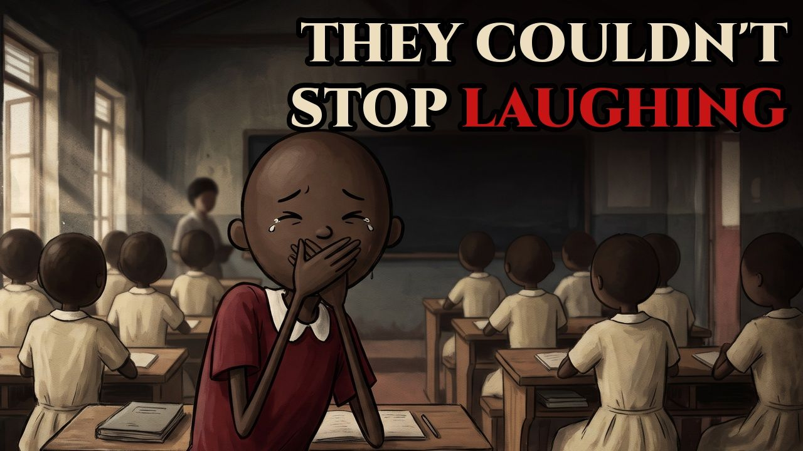

All episodes
Stories history would rather forget
Every episode is researched from historians and the original records. Where the sources disagree, we say so.
Coming Sunday 29 November
The Woman Who Gave Birth to Rabbits
Mary Toft fooled the King's own surgeons. Coming next.
The Cadaver Synod: When a Dead Pope Was Put on Trial
A pope digs up his predecessor, sits the corpse on a throne and puts it on trial.
Watch →
The School That Couldn't Stop Laughing
Three schoolgirls start to laugh and cannot stop. Then it spreads to the villages.
Watch →
The Town That Danced Itself to Death
A woman steps into the street and begins to dance. The city's cure makes it worse.
Watch & read the full story →